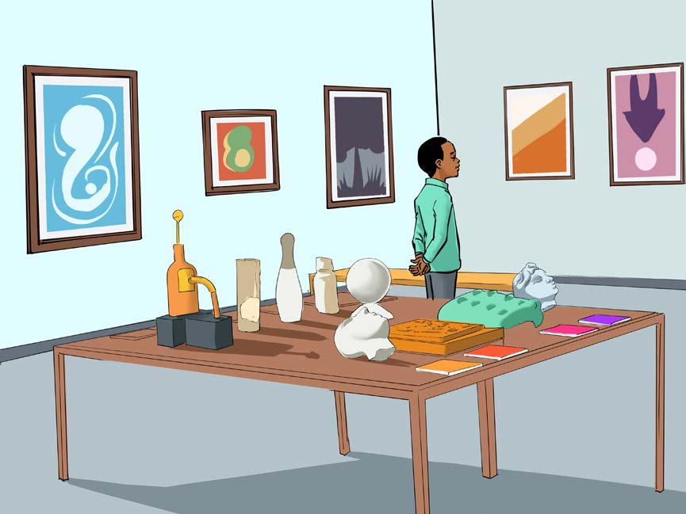
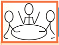

Kazi ya kufanya namba 2
Andaa onesho la picha zilizochorwa na vitu vilivyofinyangwa.
Maonyesho ya uimbaji
Maonyesho ya uimbaji hutoa fursa kwa waimbaji kuonesha uwezo wao wa kuimba mbele ya hadhira. Maonyesho haya hufanyika kwenye eneo maalumu lililoandaliwa. Washiriki hujumuika pamoja kuona vikundi vya uimbaji vikiimba nyimbo maalum zilizoandaliwa. Vilevile, maonyesho haya yanashirikisha mwimbaji mmoja mmoja au kikundi. Maonyesho haya huwa na lengo la kuelimisha, kuburudisha, kukuza vipaji na kufikisha ujumbe kwa hadhira. Watu wengi hupenda kuhudhuria maonyesho haya ili kufurahia sauti